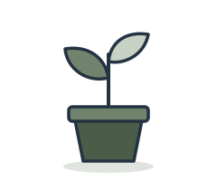
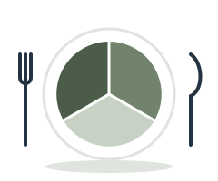
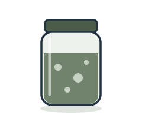
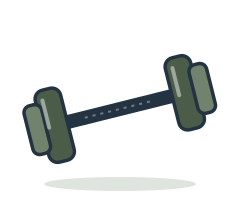

Juliana dos Santos RNCP, NNCP, RSSW
Nutrition in context.
What you eat is shaped by more than food. We’ll look at your meals, routines, goals and stage of life, and find changes that fit.
What I help with.

Midlife changes- Conflicting advice
- Everyday routines

GLP-1 support
Digestion
Active living
How we work together
Food is one part of it.
We look at the whole picture, then pick where to start.
How it works


hōlus.